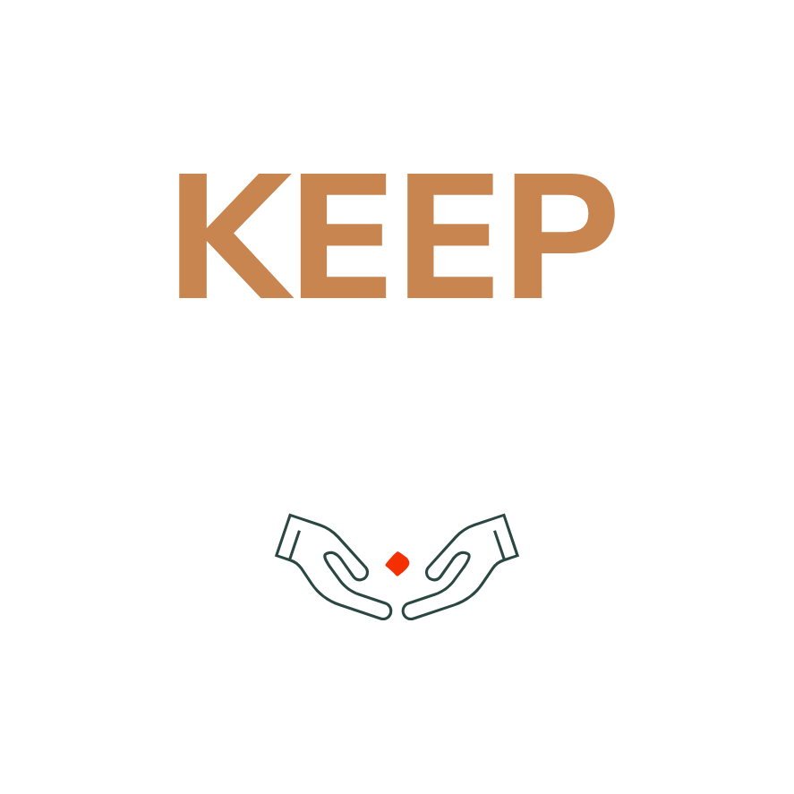
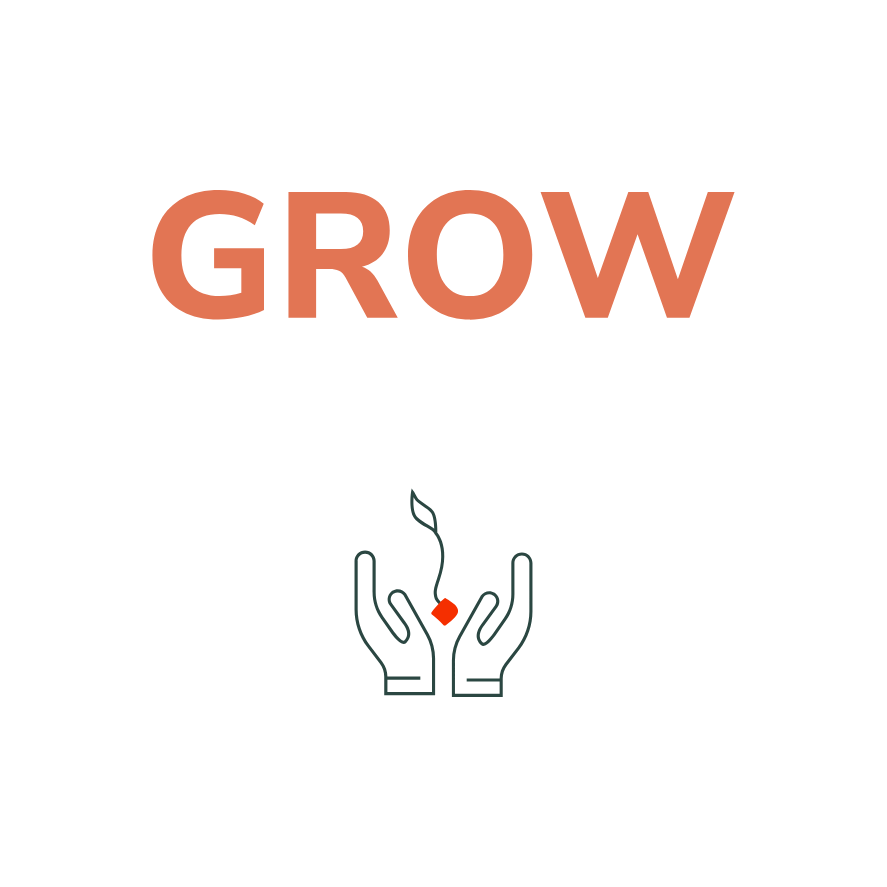

A record of projects, experiments, and lessons from the field.
Not a clean sequence of outputs, but a map of the paths,
questions, and working conditions that shaped the work.
When I first began assembling this file, I thought of it as a portfolio. Over time, that definition began to feel incomplete.
A portfolio usually presents work as a sequence of outputs: projects, tasks, and outcomes. While useful, that format often leaves out the conditions that shape the work, including the discussions, constraints, revisions, and decisions behind every result.
Communication work does not happen in isolation. It develops through context.
This document is an attempt to capture that context: not only what was done, but how it came to be.
Toward the North Star
In communication, direction matters before momentum.
For generations, travelers crossing Arabia relied on fixed points in the sky to navigate. The North Star remained constant, even when everything else felt uncertain.
Work in communication can lose direction in much the same way. Without it, execution becomes movement without meaning.
My introduction to the field came through a communication strategy firm, where I first encountered strategy not as a layer added after the fact, but as the element that gives the work its direction before anything moves.
That became the reference point. Not campaigns. Not outputs. But the thinking that defines them.
The work that follows is a record of moving closer to that point.
CO-OP TRAINING
Salient KSA
Aug to Dec 2023
This is where the journey began.
It began with proximity to the work: being in the room where ideas were shaped, challenged, and translated into action.
Working alongside senior teams, I saw how communication problems are approached, how issues are framed, how research informs direction, and how decisions connect back to a larger objective.
Alongside that exposure, I contributed to day-to-day execution across:
Project coordination and account support
Content drafting
Media monitoring
This phase laid the foundation. It gave me an understanding of how communication work operates as a system and marked the beginning of taking responsibility for delivery.
SALIENT KSA · PROJECT · 2023
World Class Talent Project
Event identity & visual brandGoody bag & print designStakeholder coordinationRegistration managementOn-ground event support
From Observer to Owner
This was the first project I owned end-to-end.
Up to that point, I had mainly been observing how ideas were developed and executed. This project marked a shift: observation became responsibility.
The Problem Behind the Project
World Class Talent did not begin as an event concept. It began as a recurring problem the agency kept encountering: clients struggled to find the right people to carry strategy forward and often could not retain the talent they already had.
Turnover was high. Tenure was short. The pattern repeated across sectors.
Published data reflected what the agency was already seeing firsthand:
2.2 yearsaverage employee tenure in Saudi Arabia
46%of companies struggle to find qualified talent
48%of employees are open to new opportunities
87%are open to hearing about something better
The Ask
Design an event that would position the agency as a credible voice in the talent space, while creating a platform where the issue could be addressed directly.
The Challenge
How do you translate a complex and ongoing talent challenge into an experience worth showing up for, one people participate in rather than simply attend?
The Approach
The agency partnered with talent acquisition and leadership development specialists to create a World Café-style unconference: structured conversations instead of formal presentations, bringing together senior business leaders and HR practitioners.
The theme framed talent not as a one-time hiring issue, but as a continuous journey:
Find · Keep · Grow


Concept & Visual Identity
One of the central challenges was to create an identity that carried meaning beyond appearance. The goal was not simply to design a visual system, but to build a concept people could understand, a message people could carry forward, and an experience that extended beyond the event itself.
The concept was built around the idea of growth, because talent does not appear fully formed. It is discovered, supported, and developed over time.
That became the foundation:
Find → discovering potential
Keep → protecting and retaining it
Grow → developing it into something meaningful
Each stage was represented visually through the language of hands: reaching, holding, and nurturing.
Making the Idea Physical
The most important decision was to move away from generic giveaways and create something that carried the idea forward.
I developed a branded goody bag containing a seed-planting kit, including a pot, soil, and seeds, as a simple metaphor for talent: something discovered, nurtured, and grown over time.
The intention was straightforward: the conversation should not end when the event ends. It should continue as something participants care for over time.
Some attendees later shared photos of their growing plants, extending the idea beyond the event itself.
What I Did
Developed the event concept and thematic direction
Designed the identity and supporting visual materials
Created and produced the goody bag and printed assets
Coordinated with stakeholders and external partners
Built and managed the registration system through Eventbrite
Handled invitations and email campaign distribution
Supported full on-ground execution during the event
GOODY BAG 1, Branded bag, front application.GOODY BAG 2, Bag showing the Find Keep Grow theme.Seed Kit, Planting kit used as a giveaway object tied to the growth theme.
Seed Box, Packaging concept reinforcing the talent growth metaphor.Shared photo of the growing plant, showing how the idea continued beyond the event.
The Result
The event opened follow-up business conversations and partnership opportunities, while helping position the agency and its partners as active contributors to the Saudi talent conversation.
Extend The Ad Network
Brand & Communication Strategy Intern | Jul to Oct 2024
At Salient, I learned how work is executed. At Extend, I learned how it begins.
Working directly with the Strategy Manager, I was involved from the moment a client brief arrived to the point it was translated into communication direction.
Most of my time was spent in research, though never as a passive exercise. For each client, I analyzed how comparable entities, both regionally and globally, structured their communication ecosystems: audience segmentation, messaging patterns, platform strategies, and content architecture.
The objective was not to replicate outputs, but to understand the structural decisions behind them.
What I Did
Conducted competitive and benchmark analysis
Built structured research frameworks
Contributed to internal strategic briefs
Across sectors including government, semi-government, tourism, and infrastructure, one thing remained consistent: research first, architecture before content, direction before execution.
EXTEND THE AD NETWORK · Project MEDINA DESTINATION STRATEGY
A Project That Reshaped My Thinking
Where Strategy Becomes Structure
The Problem
Medina is one of the most significant cities in the Islamic world. Yet its public communication has long been centered on a single dominant narrative: pilgrimage and spiritual obligation.
That narrative is not incorrect. It is incomplete.
In destination branding, incompleteness creates a ceiling. A place communicated through a single lens can only attract a narrow visitor profile, generate limited narratives, and occupy a fixed position in the public imagination, regardless of its actual depth.
The Ask
Conduct a structured benchmark analysis to identify how comparable destinations communicate across multiple dimensions, then translate those findings into a research output that could inform the strategic direction for Medina.
The Challenge
How do you expand the perception of a destination without diluting its core meaning?
Benchmarking
Rome | International Reference
A city that operates through a dual identity. It holds deep religious significance while also sustaining a fully developed cultural, historical, and experiential dimension, without forcing a trade-off between the two.
AlUla | Regional Reference
A destination structured through multiple platforms. Rather than relying on a single narrative, it builds perception through heritage, arts and culture, festivals, and storytelling ecosystems. Each platform carries one dimension of the destination. Together, they construct a layered identity.
What the Benchmarking Revealed
The limitation was not in the messaging. It was in the communication architecture.
Medina was being expressed through a single narrative, while the reality of the destination existed across multiple experiential dimensions.
The Strategic Response
The destination was reframed across four dimensions:
Spiritual Core
The foundation, present across all touchpoints without overwhelming the rest.
Historical Continuity
History positioned not as something to observe, but something to move through.
Cultural Hospitality
A deeply embedded culture of welcome, where visitors are received as guests, not tourists.
Contemporary Experience
Modern infrastructure that meets present-day expectations while preserving historical and spiritual depth.
Each dimension builds on the one before it, forming a layered structure rather than a list of separate propositions. Together, they shape a destination that speaks to the spirit, the mind, the heart, and the senses, in that order, deliberately.
The Strategic Line
"Discover a Journey of Your Lifetime"
An integrated promise that brings together spiritual depth, cultural richness, and human experience.
The Manifesto
Medina is a journey to the heart of Islamic history.
Every landmark tells a story. Every stone carries a fragment of a legacy that has shaped more than a billion lives across fourteen centuries. History here is not archived behind museum walls. It is encountered with every step, alive in every corner of the city.
This is a place where spiritual authenticity and deep hospitality are not amenities. They are part of its character.
The pilgrim finds stillness. The historian encounters a city that continues to breathe its own past. The curious traveler discovers a cultural experience that cannot be replicated elsewhere.
Medina opens its doors to all who come, and remains with all who leave.
What I Did
Conducted structured benchmark analysis across regional and international destinations
Identified how comparable destinations communicate across multiple dimensions
Organized findings into a structured research output that informed the strategic direction
Contributed to internal strategic briefs
Key Takeaway
Strategy is not about increasing volume. It is about structuring meaning. Clarity is not simplification. It is architecture.
From Thinking to Doing
This was my first titled role.
After two earlier stages spent understanding how strategy is observed and how it is built, this role required carrying that thinking into execution across live campaigns, real clients, and shifting conditions.
At Katch, strategy was no longer something discussed in principle. It had to hold under pressure, within budget, across timelines, and in coordination with multiple stakeholders.
My role involved:
Coordinating media and influencer outreach
Managing day-to-day client communication
Supporting campaign development
Translating communication ideas into practical execution
All within environments shaped by client expectations, budget constraints, and time pressure.
Projects: Baby Expo Riyadh · Address Jabal Omar Makkah · Cucina and NOMAS Riyadh
KATCH INTERNATIONAL · ACCOUNT EXECUTIVE
Baby Expo Riyadh
Launch Communications | Saudi Market Entry
The Brief
After welcoming more than 15,000 visitors and 250 brands in the UAE, Baby Expo made its Saudi debut in October 2025.
Launching in a new market introduced a different set of conditions. In Saudi Arabia, both media visibility and influencer promotion came at a significantly higher cost than the client had previously worked with. The budget was limited from the outset, which meant awareness could not be built through scale alone.
The Challenge
How do you generate credible awareness and support attendance in a new market with:
A constrained budget
No existing local audience base
High costs across media and influencer placements
The challenge became more acute when event promotion was delayed by approximately one month due to permit requirements, compressing the launch timeline even further.
What I Owned
Managing day-to-day client communication
Coordinating between PR, influencer, and content teams
Overseeing influencer outreach and partnerships
Supporting media planning and press execution
Managing timelines, deliverables, and rollout under shifting conditions
This meant maintaining campaign alignment across teams while adjusting plans in real time.
The Strategic Shift
We shifted from a paid-media-heavy plan to a more targeted PR and influencer-led model, prioritizing relevance over scale.
Rather than selecting creators based on follower count alone, the strategy focused on audience alignment. Creators were segmented according to the parenting journeys they represented:
Family and lifestyle creators
Expecting parents
Educational parenting voices
This allowed the campaign to tap into existing trust within parenting communities rather than trying to build awareness from scratch.
Execution
Influencer & Creator Management
Influencer collaborations relied primarily on PR-based partnerships and gifting through event partners rather than large paid endorsements.
I supported outreach, confirmations, creator coordination, and content timelines across a broad mix of profiles, helping structure collaborations around efficiency, relevance, and credibility.
Content Enablement
To support creators while maintaining message consistency, we prepared structured content toolkits that included:
Event messaging, including date, location, and value proposition
Content prompts aligned with parenting journeys
Visual assets for brand consistency
Optional scripts and talking points
This helped keep outputs aligned without compromising each creator's authentic voice.
Adapting to the Permit Delay
Public promotion could not begin until the event permit was officially secured, delaying the campaign by roughly one month.
To maintain momentum during that period, we worked with educational parenting creators and experts to produce thematic, non-promotional content around childcare, newborn preparation, and parenting challenges, without directly referencing the event.
This helped build early audience interest and warm the market ahead of the official launch. Once approval was secured, the campaign shifted into a compressed final rollout, with influencer and PR activity concentrated into the remaining month.
PR & Media Execution
Media outreach planning and press release development
Media follow-ups and feature coordination
Coverage monitoring and reporting
Speaker selection support
What It Delivered
Delivered under budget constraints and within a timeline compressed by a one-month permit delay:
Constraints did not reduce the effectiveness of the campaign. They clarified where precision mattered most.
Relevance over scale. Structure over volume.
KATCH INTERNATIONAL · ACCOUNT EXECUTIVE
Address Jabal Omar Makkah
PR, Influencer, and Experience-Led Communication · 2025
The Brief
Address Jabal Omar Makkah is a luxury property located near Al-Masjid Al-Haram, one of the strongest decision drivers for visitors to Makkah.
The client came without an established communication direction, and part of the work involved helping shape one.
The Challenge
Near... but not the nearest.
In Makkah, especially around the Haram, the strongest competitive advantage is often simple: being the closest.
That creates a difficult communication reality. Even when a hotel offers stronger comfort, service, or overall experience, those advantages can be overshadowed if another property is perceived as nearer.
Although Address Jabal Omar Makkah was only minutes from the Haram, proximity alone was not a position it could dominate. The challenge, then, was not to claim closeness more loudly, but to shift the frame entirely, from distance to ease, comfort, and the quality of the overall stay.
What I Worked On
My role focused on supporting the communication direction behind the project and helping translate it into PR, influencer, and activation thinking.
This included:
Supporting communication framing and messaging development
Contributing to influencer and content direction
Supporting PR and activation planning
Helping shape audience-facing storytelling around the stay experience
The Communication Direction
The communication thinking shifted from a narrow focus on proximity to a broader message around ease, comfort, and a more seamless Umrah journey.
Instead of asking only, "How close is the hotel to the Haram?" the communication needed to answer, "How does this hotel make the overall Umrah experience feel easier, calmer, and more meaningful?"
Communication Line: "The Smart Way to Stay in Makkah"
Communication Themes
Smart Access
Making the journey feel clear, manageable, and predictable rather than simply near.
Rest and Recovery
Framing the stay as part of the spiritual experience, emphasizing calm and restoration between visits to the Haram.
Meaningful Stay
Moving beyond accommodation to suggest a stay with emotional and spiritual depth.
Global Hospitality
Highlighting warmth, welcome, and the experience of being received with genuine care.
Execution
Journey Transparency
Creators documented real journeys from the hotel to the Haram, focusing on time, flow, and predictability, directly addressing assumptions around distance.
Pathway Experience
Content captured the walk between the hotel and the Haram, including cafés, local shops, and everyday street life, helping reframe distance as part of the experience.
Rest Narrative
Influencers highlighted the contrast between external congestion and internal calm, strengthening comfort as a differentiator.
User-Generated Content
Guest content added authenticity and credibility through lived experience.
Key Takeaway
The strongest communication does not change what a product is. It changes how its value is understood.
This project showed me that building a clear strategic lens before execution is not a luxury. It is what makes the execution matter.
Not every project requires scale or reinvention. Some require precision: doing the right things, in the right order, without losing clarity under pressure.
KATCH INTERNATIONAL · ACCOUNT EXECUTIVE
Cucina and NOMAS Riyadh
Restaurant Launch Communications · Riyadh 2025
The Brief
Cucina and NOMAS were two distinct Marriott dining concepts launching in Riyadh simultaneously, each with a different culinary identity and a different target audience. The work required managing two separate communication approaches under a shared timeline.
The Challenge
To deliver a successful dual launch while ensuring:
Clear differentiation in positioning and audience targeting
Tailored media and influencer engagement for each concept
Seamless coordination across hotel teams, chefs, media, and influencers
All within a single, time-sensitive launch window.
What I Owned
My role focused on managing media and influencer coordination across both concepts while keeping execution aligned under a shared timeline.
This included:
Managing media and influencer engagement across both concepts
Curating and segmenting guest lists based on relevance to each brand
Coordinating communication between internal teams, hotel stakeholders, and chefs
Preparing and distributing media briefs and materials
Overseeing timelines, deliverables, and execution across both workstreams
Execution
Pre-Launch: Building the Right Room
The work began before either restaurant opened. I coordinated two separate pre-launch media dinners, one for each concept, bringing together selected food and lifestyle journalists and influencers for an exclusive preview with the chef.
This included:
Curating targeted guest lists aligned with each restaurant's identity
Managing invitations, confirmations, and guest communication
Preparing tailored media briefs to guide coverage
Coordinating on-ground execution with hotel and culinary teams
The goal was to give the right people a reason to care before the public announcement.
Launch: Managing Parallel Visibility
At launch, both restaurants entered the market with an established media and influencer foundation.
This phase involved:
Managing the transition from preview to public opening
Tracking and monitoring coverage across both concepts simultaneously
Ensuring consistency in execution while maintaining distinct brand narratives
Dinner Incredible Riyadh
Post-Launch: Dinner Incredible Riyadh
Following the launches, both Cucina and NOMAS were selected to participate in Dinner Incredible Riyadh, an international culinary platform that brought together fifteen renowned chefs from Saudi Arabia and around the world under the theme "Saudi Meets the World."
This was approached not as a standard event, but as a high-impact visibility platform, extending both concepts into a broader global culinary narrative.
I supported this phase through:
Managing targeted media and influencer outreach aligned with the event's prestige
Coordinating coverage across both concepts while maintaining clear differentiation
Aligning stakeholders across hotel teams, event organizers, and media partners
Ensuring messaging connected each concept to the event's international positioning
Impact
Extended visibility beyond the initial launch phase
Positioned both concepts within a broader international culinary conversation
Reinforced brand credibility through association with a globally recognized platform
Strong execution is not about scale. It is about control, coordination, and precision under pressure.
The Next Chapter
Northwestern University Medill IMC
Each stage in this document built on the one before it.
At Salient, I learned how strategy gives direction to execution.
At Extend, I moved closer to the source, analyzing how communication is structured before it is expressed.
At Katch, I carried that thinking into live work, managing complexity across real clients, real constraints, and real timelines.
That progression built an instinct for how communication problems are approached. But instinct, on its own, has limits.
The next step is a more structured understanding of how strategy connects with measurement, how decisions are tested, and how communication systems are evaluated beyond intuition.
I am looking for an environment where strategy, brand, media, and analytics are treated as a connected system, where thinking is not only developed, but applied under real conditions.
I also want to step outside the context I have worked in so far. Every project in this document was built in Saudi Arabia, within a market evolving rapidly. Exposure to a different environment, with more established frameworks and deeper measurement infrastructure, would sharpen how I think and expand how I approach communication problems when I return.
Because I will return.
The work I am moving toward sits on the agency side, supporting institutions, destinations, and initiatives that require communication at a structural level.
This document reflects where I am.
The next step is about where that direction leads.
These field notes do not end here.
What began as a portfolio became a record of how I think, and a commitment to keep building on it wherever the next station leads.


.JPG)